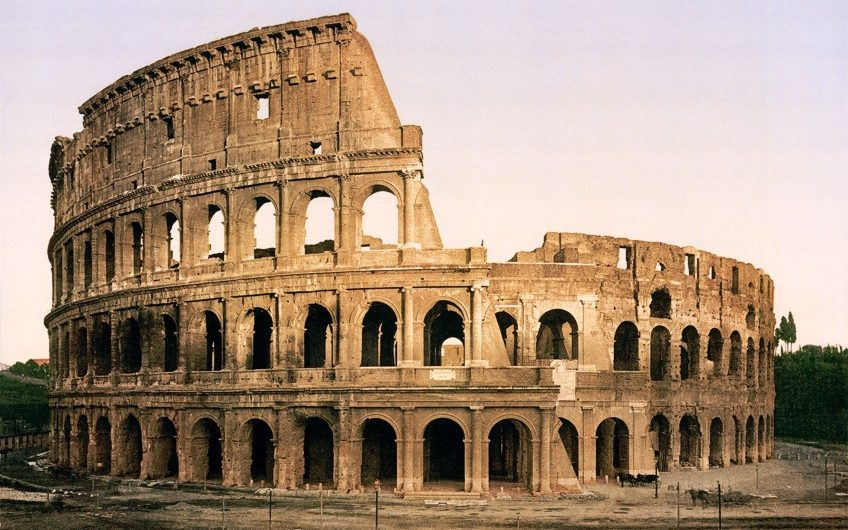
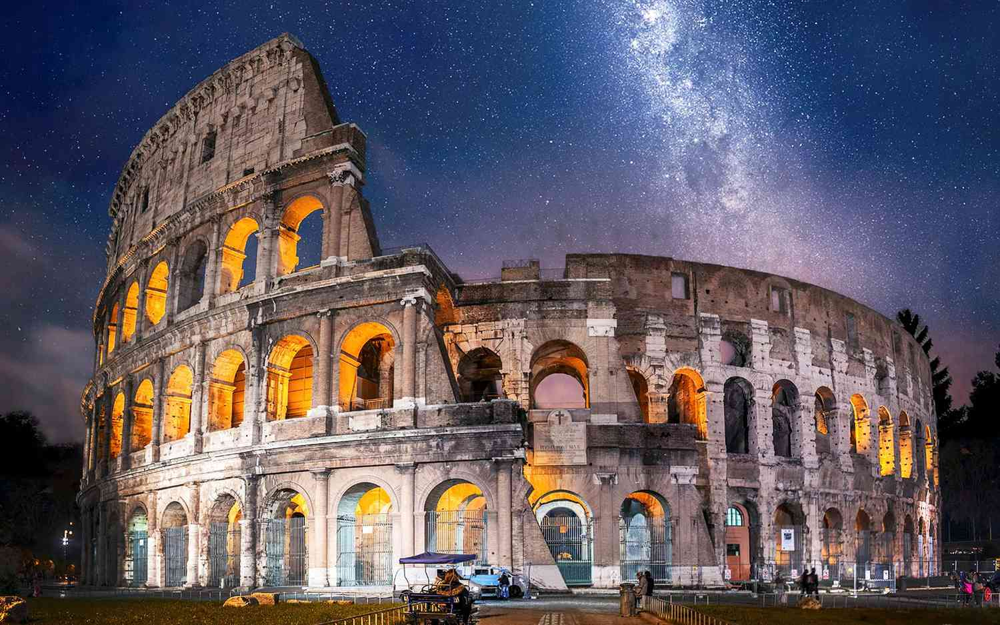

The Colosseum

The Colosseum is an oval amphitheatre in the centre of the city of Rome, Italy, just east of the Roman Forum. It is the largest ancient amphitheatre ever built, and is still the largest standing amphitheatre in the world today, despite its age. Construction began under the emperor Vespasian (r. 69 - 79 AD) in 72 and was completed in 80 AD under his successor and heir, Titus (r. 79 - 81).[2] Further modifications were made during the reign of Domitian (r. 81–96).[3] The three emperors that were patrons of the work are known as the Flavian dynasty, and the amphitheatre was named the Flavian Amphitheatre (Latin: Amphitheatrum Flavium; Italian: Anfiteatro Flavio by later classicists and archaeologists for its association with their family name (Flavius). The Colosseum is built of travertine limestone, tuff (volcanic rock), and brick-faced concrete. It could hold an estimated 50,000 to 80,000 spectators at various points in its history,having an average audience of some 65,000; it was used for gladiatorial contests and public spectacles including animal hunts, executions, re-enactments of famous battles, and dramas based on Roman mythology, and briefly mock sea battles. The building ceased to be used for entertainment in the early medieval era. It was later reused for such purposes as housing, workshops, quarters for a religious order, a fortress, a quarry, and a Christian shrine. Although substantially ruined by earthquakes and stone robbers taking spolia, the Colosseum is still an iconic symbol of Imperial Rome and was listed as one of the New 7 Wonders of the World. It is one of Rome's most popular tourist attractions and also has links to the Roman Catholic Church, as each Good Friday the Pope leads a torchlit "Way of the Cross" procession that starts in the area around the Colosseum.[8] The Colosseum is depicted on the Italian version of the five-cent euro coin.
Physical description

Exterior
Unlike Roman theatres that were built into hillsides, the Colosseum is an entirely free-standing structure. It derives its basic exterior and interior architecture from that of two theatres back to back. It is elliptical in plan and is 189 meters (615 ft / 640 Roman feet) long, and 156 meters (510 ft / 528 Roman feet) wide, with a base area of 24,000 square metres (6 acres). The height of the outer wall is 48 meters (157 ft / 165 Roman feet). The perimeter originally measured 545 meters (1,788 ft / 1,835 Roman feet). The central arena is an oval 87 m (287 ft) long and 55 m (180 ft) wide, surrounded by a wall 5 m (15 ft) high, above which rose tiers of seating.
The outer wall is estimated to have required over 100,000 cubic metres (3.5 million cubic feet) of travertine stone which were set without mortar; they were held together by 300 tons of iron clamps. However, it has suffered extensive damage over the centuries, with large segments having collapsed following earthquakes. The north side of the perimeter wall is still standing; the distinctive triangular brick wedges at each end are modern additions, having been constructed in the early 19th century to shore up the wall. The remainder of the present-day exterior of the Colosseum is in fact the original interior wall.
Superposed order of the Colosseum
The surviving part of the outer wall's monumental façade comprises three superposed storeys surmounted by a podium on which stands a tall attic, both of which are pierced by windows interspersed at regular intervals. The arcades are framed by half-columns of the Doric, Ionic, and Corinthian orders, while the attic is decorated with Corinthian pilasters Each of the arches in the second- and third-floor arcades framed statues, probably honoring divinities and other figures from Classical mythology.
Two hundred and forty mast corbels were positioned around the top of the attic. They originally supported a retractable awning, known as the velarium, that kept the sun and rain off spectators. This consisted of a canvas-covered, net-like structure made of ropes, with a hole in the center. It covered two-thirds of the arena, and sloped down towards the center to catch the wind and provide a breeze for the audience. Sailors, specially enlisted from the Roman naval headquarters at Misenum and housed in the nearby Castra Misenatium, were used to work the velarium.
The Colosseum's huge crowd capacity made it essential that the venue could be filled or evacuated quickly. Its architects adopted solutions very similar to those used in modern stadiums to deal with the same problem. The amphitheatre was ringed by eighty entrances at ground level, 76 of which were used by ordinary spectators. Each entrance and exit was numbered, as was each staircase. The northern main entrance was reserved for the Roman Emperor and his aides, whilst the other three axial entrances were most likely used by the elite. All four axial entrances were richly decorated with painted stucco reliefs, of which fragments survive. Many of the original outer entrances have disappeared with the collapse of the perimeter wall, but entrances XXIII (23) to LIIII (54) survive.[20]
Spectators were given tickets in the form of numbered pottery shards, which directed them to the appropriate section and row. They accessed their seats via vomitoria (singular vomitorium), passageways that opened into a tier of seats from below or behind. These quickly dispersed people into their seats and, upon conclusion of the event or in an emergency evacuation, could permit their exit within only a few minutes. The name vomitoria derived from the Latin word for a rapid discharge, from which English derives the word vomit.
Interior seating
According to the Codex-Calendar of 354, the Colosseum could accommodate 87,000 people, although modern estimates put the figure at around 50,000. They were seated in a tiered arrangement that reflected the rigidly stratified nature of Roman society. Special boxes were provided at the north and south ends respectively for the Emperor and the Vestal Virgins, providing the best views of the arena. Flanking them at the same level was a broad platform or podium for the senatorial class, who were allowed to bring their own chairs. The names of some 5th century senators can still be seen carved into the stonework, presumably reserving areas for their use. Diagram of the levels of seating The tier above the senators, known as the maenianum primum, was occupied by the non-senatorial noble class or knights (equites). The next level up, the maenianum secundum, was originally reserved for ordinary Roman citizens (plebeians) and was divided into two sections. The lower part (the immum) was for wealthy citizens, while the upper part (the summum) was for poor citizens. Specific sectors were provided for other social groups: for instance, boys with their tutors, soldiers on leave, foreign dignitaries, scribes, heralds, priests and so on. Stone (and later marble) seating was provided for the citizens and nobles, who presumably would have brought their own cushions with them. Inscriptions identified the areas reserved for specific groups. Another level, the maenianum secundum in legneis, was added at the very top of the building during the reign of Domitian. This comprised a gallery for the common poor, slaves and women. It would have been either standing room only, or would have had very steep wooden benches. Some groups were banned altogether from the Colosseum, notably gravediggers, actors and former gladiators.[20] Each tier was divided into sections (maeniana) by curved passages and low walls (praecinctiones or baltei), and were subdivided into cunei, or wedges, by the steps and aisles from the vomitoria. Each row (gradus) of seats was numbered, permitting each individual seat to be exactly designated by its gradus, cuneus, and number.

Arena and hypogeum
The arena itself was 83 meters by 48 meters (272 ft by 157 ft / 280 by 163 Roman feet).[20] It comprised a wooden floor covered by sand (the Latin word for sand is harena or arena), covering an elaborate underground structure called the hypogeum (literally meaning "underground"). The hypogeum was not part of the original construction but was ordered to be built by Emperor Domitian. Little now remains of the original arena floor, but the hypogeum is still clearly visible. It consisted of a two-level subterranean network of tunnels and cages beneath the arena where gladiators and animals were held before contests began. Eighty vertical shafts provided instant access to the arena for caged animals and scenery pieces concealed underneath; larger hinged platforms, called hegmata, provided access for elephants and the like. It was restructured on numerous occasions; at least twelve different phases of construction can be seen.
The hypogeum was connected by tunnels to a number of points outside the Colosseum. Animals and performers were brought through the tunnel from nearby stables, with the gladiators' barracks at the Ludus Magnus to the east also being connected by tunnels. Separate tunnels were provided for the Emperor and the Vestal Virgins to permit them to enter and exit the Colosseum without needing to pass through the crowds.
Substantial quantities of machinery also existed in the hypogeum. Elevators and pulleys raised and lowered scenery and props, as well as lifting caged animals to the surface for release. There is evidence for the existence of major hydraulic mechanisms and according to ancient accounts, it was possible to flood the arena rapidly, presumably via a connection to a nearby aqueduct. However, the construction of the hypogeum at Domitian's behest put an end to the practise of flooding, and thus also to naval battles, early in the Colosseum's existence.
Location
The Colosseum is an oval amphitheatre in the centre of the city of Rome, Italy, just east of the Roman Forum. It is the largest ancient amphitheatre ever built, and is still the largest standing amphitheatre in the world today, despite its age.
Gallery